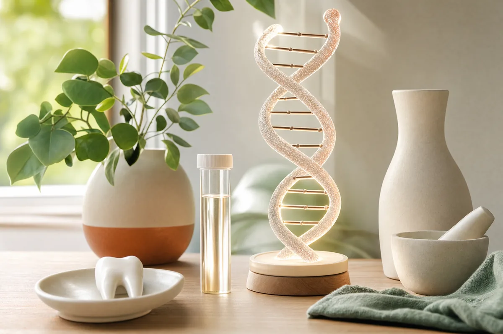

Blog / Article
Unlocking Your Oral Health Blueprint: How Diagnostic Oral DNA Testing Revolutionizes Personalized Dental Care

The future of dental care isn't just about treating symptoms, it's about understanding the unique biological fingerprint that determines your oral health destiny. At Green Dentistry, Dr. Hye Park, a board-certified integrative biological dentist and naturopath, is pioneering a revolutionary approach to oral health through diagnostic oral DNA testing. This cutting-edge laboratory analysis of your saliva reveals the hidden microbial world in your mouth, allowing for truly personalized treatment plans that address the root causes of dental disease.
As the only SMART-certified provider in the area with advanced training from the American College of Integrative Medicine in Dentistry, Dr. Park understands that optimal oral health requires more than just regular cleanings and fillings. It demands a deep understanding of your mouth's unique bacterial ecosystem and how it impacts your overall health and well-being.
What Is Diagnostic Oral DNA Testing?
Diagnostic oral DNA testing represents a paradigm shift in how we approach oral health care. Unlike traditional dental examinations that rely primarily on visual inspection and X-rays, DNA testing provides a molecular-level analysis of the microorganisms living in your mouth. Through a simple, non-invasive saliva sample, this advanced laboratory testing can identify and quantify specific bacteria, viruses, and other microorganisms that influence your oral and systemic health.
- The science behind the test: Your mouth contains over 700 different species of bacteria, many of which play crucial roles in maintaining oral health, while others can contribute to disease. Traditional bacterial culture methods can only identify a small fraction of these microorganisms and often miss the anaerobic (oxygen-hating) bacteria that cause the most serious oral health problems. DNA testing, however, can detect and measure even these hard-to-culture organisms with remarkable precision.
- How the testing process works: The collection process is remarkably simple and comfortable. During your appointment at Green Dentistry, you'll provide a small saliva sample, no needles, no discomfort, just a simple collection into a sterile container. This sample is then sent to a specialized laboratory where advanced DNA sequencing technology analyzes the genetic material of every microorganism present in your mouth.
- What makes this testing revolutionary: Unlike traditional bacterial cultures that can take days to grow and may miss many important organisms, DNA testing provides comprehensive results within days. The test can identify bacteria that are present in very small numbers but may become problematic under certain conditions. It can also detect bacterial strains that are resistant to traditional treatments, allowing Dr. Park to choose the most effective therapeutic approaches from the beginning.
The Hidden World in Your Mouth: Understanding Your Oral Microbiome
Your oral microbiome is as unique as your fingerprint, influenced by genetics, diet, lifestyle, stress levels, medications, and environmental factors. This complex ecosystem directly impacts not just your oral health, but your overall systemic wellness in ways that scientists are only beginning to understand.
Key bacterial categories revealed by DNA testing:
Pathogenic bacteria: These are the disease-causing organisms that contribute to tooth decay, gum disease, and other oral health problems. The test identifies specific strains such as:
- Porphyromonas gingivalis: A key player in aggressive periodontitis and linked to cardiovascular disease
- Aggregatibacter actinomycetemcomitans: Associated with aggressive gum disease, especially in younger patients
- Tannerella forsythia: Contributes to chronic periodontitis and has been linked to respiratory infections
- Streptococcus mutans: The primary cavity-causing bacteria, particularly damaging to tooth enamel
Beneficial bacteria: These protective organisms help maintain oral health by competing with harmful bacteria and supporting immune function:
- Streptococcus sanguinis: Helps prevent cavity formation by producing compounds that inhibit harmful bacteria
- Neisseria species: Contribute to maintaining healthy oral pH levels
- Veillonella species: Help metabolize lactic acid produced by other bacteria, reducing cavity risk
Opportunistic organisms: These bacteria are normally harmless but can become problematic under certain conditions:
- Candida species: Yeast organisms that can overgrow when the bacterial balance is disrupted
- Prevotella intermedia: Can contribute to gum disease, especially during hormonal changes
The systemic health connection: Research has established strong links between oral bacteria and systemic health conditions. The DNA testing can identify bacterial strains associated with:
- Cardiovascular disease: Certain oral bacteria can enter the bloodstream and contribute to heart disease and stroke
- Diabetes complications: Gum disease bacteria can worsen blood sugar control and insulin resistance
- Respiratory infections: Oral bacteria can be aspirated into the lungs, potentially causing pneumonia
- Pregnancy complications: Specific oral bacteria are associated with premature birth and low birth weight babies
- Rheumatoid arthritis: Some oral bacteria may trigger autoimmune responses that affect joints
Why Traditional Dental Care Falls Short
Traditional dental care, while valuable, operates primarily on a reactive model, waiting for problems to develop and then treating the symptoms. This approach has several significant limitations that diagnostic oral DNA testing addresses:
The culture method limitations: Traditional bacterial cultures require growing bacteria in laboratory conditions, which means many anaerobic bacteria (the most dangerous ones) cannot be cultured using standard methods, results can take days or weeks, only a small percentage of oral bacteria can be successfully grown in culture, and the process may miss bacteria present in small numbers but still clinically significant.
The visual examination gap: Even the most experienced dentists can only see what's visible on the surface. Early bacterial infections often occur in areas that aren't easily accessible to visual examination, such as between teeth where food particles and bacteria accumulate, deep in gum pockets where anaerobic bacteria thrive, around existing dental work where bacteria can hide, and in microscopic crevices in tooth enamel.
The one-size-fits-all treatment approach: Traditional dentistry often relies on standardized treatment protocols that may not be optimal for your specific bacterial profile, including antibiotic selection based on general guidelines rather than specific bacterial sensitivities, uniform treatment approaches that don't account for individual bacterial variations, and limited ability to predict treatment outcomes.
The reactive vs. proactive care model: Traditional dental care typically addresses problems after they've already caused symptoms, waiting for cavities to develop before intervention, treating gum disease after significant tissue damage has occurred, and managing complications rather than preventing root causes.
How Dr. Park Uses DNA Testing Results for Personalized Treatment
Armed with detailed information about your oral microbiome, Dr. Park can develop treatment strategies that are specifically tailored to your unique bacterial profile. This personalized approach leads to more effective outcomes and helps prevent future problems before they develop.
Targeted antimicrobial therapy: Rather than using broad-spectrum antibiotics that can disrupt beneficial bacteria along with harmful ones, Dr. Park can select specific antimicrobial agents that target the problem bacteria identified in your test:
- Precision antibiotic selection: Choose antibiotics that are most effective against your specific bacterial strains
- Probiotic recommendations: Select beneficial bacteria strains that can help restore healthy balance
- Natural antimicrobial options: Use plant-based compounds that target specific pathogenic bacteria while preserving beneficial organisms
- Ozone therapy application: Apply medical-grade ozone treatments that specifically target anaerobic pathogenic bacteria
Customized preventive protocols: The DNA test results allow Dr. Park to design prevention strategies based on your specific risk factors, including oral hygiene modifications based on where problematic bacteria are concentrated, dietary recommendations that discourage harmful bacteria, supplement protocols that support your oral microbiome balance, and monitoring schedules based on your individual bacterial profile.
Biocompatible material selection: As a biologic dentist, Dr. Park uses the DNA test results to choose materials that won't disrupt your oral microbiome, including mercury-free alternatives, biocompatible restorations that support healthy bacterial populations, and non-toxic options that avoid encouraging the growth of opportunistic bacteria.
The Biologic Dentistry Advantage: Treating the Whole Person
Dr. Park's approach to oral DNA testing is enhanced by her comprehensive training in biologic dentistry and naturopathy. This holistic perspective recognizes that oral health cannot be separated from overall systemic wellness.
Integrative assessment approach: The DNA testing is just one component of a comprehensive evaluation that includes nutritional analysis, stress evaluation, immune system assessment, and toxic load evaluation to identify environmental factors that may disrupt oral health.
Whole-body treatment protocols: Treatment recommendations extend beyond the mouth to support overall health, including nutritional support, safe detoxification protocols, immune system support, and stress management techniques that reduce stress hormones that can encourage harmful bacterial growth.
Conditions That Benefit from Oral DNA Testing
DNA testing provides valuable insights for a wide range of oral health conditions and can help identify problems before they become symptomatic.
Periodontal disease management: Gum disease is primarily caused by specific bacterial infections, making DNA testing particularly valuable for early detection, treatment selection, progress monitoring, and recurrence prevention.
Persistent bad breath (halitosis): Chronic bad breath often results from specific bacterial overgrowth that can be identified through DNA testing, allowing root cause identification, targeted treatment, and long-term management.
Recurrent oral infections: Patients who experience frequent oral infections often have specific bacterial imbalances that DNA testing can identify, supporting preventive protocols and treatment optimization.
Systemic health concerns: For patients with cardiovascular disease, diabetes, autoimmune conditions, or those planning a pregnancy, oral bacterial balance becomes critically important and can be monitored and managed through testing.
Treatment planning for major dental work: Before significant dental procedures, DNA testing can optimize outcomes through pre-surgical preparation, supporting implant success, and creating bacterial conditions that support long-term restoration success.
The Testing Process: What to Expect
Understanding what to expect during oral DNA testing can help you feel prepared and confident about the process.
Pre-test preparation: To ensure accurate results, Dr. Park will provide specific instructions before your test, which may include avoiding antibiotics for at least two weeks before testing (unless medically contraindicated), temporarily avoiding antibacterial mouthwashes and toothpastes, continuing normal brushing and flossing, and avoiding alcohol and excessive sugar for 24 hours before testing.
Sample collection: The collection process is simple and completely painless, requiring only a small sample of saliva in a sterile collection container, with no needles, swabs, or invasive procedures, and takes just a few minutes during your regular appointment.
Laboratory analysis: Your sample undergoes sophisticated analysis at specialized laboratories, where genetic material is extracted from all microorganisms, advanced DNA sequencing identifies and quantifies each organism, and a comprehensive report correlates the findings with clinical significance.
Results consultation: Dr. Park will schedule a dedicated appointment to review your results thoroughly, providing a detailed explanation of your bacterial profile, a risk assessment, personalized treatment recommendations, and a treatment schedule that addresses your most critical bacterial imbalances first.
Integrating DNA Testing with Green Dentistry's Holistic Approach
At Green Dentistry, oral DNA testing is seamlessly integrated with the practice's commitment to environmental consciousness and biologic dentistry principles. DNA test results are combined with biocompatibility testing, nutritional evaluation, detoxification protocols, and immune system support. For patients requiring mercury amalgam removal, DNA testing provides additional safety benefits through pre-removal bacterial assessment, post-removal monitoring, and healing optimization. Dr. Park's use of medical-grade ozone therapy is also optimized using DNA test results to target areas with the highest concentrations of pathogenic bacteria.
Long-Term Health Benefits and Monitoring
The benefits of oral DNA testing extend far beyond immediate treatment decisions, providing a foundation for long-term oral and systemic health optimization. Regular testing allows for proactive health management through early intervention, risk reduction, and personalized prevention. Since oral bacteria affect overall health, monitoring also supports cardiovascular protection, diabetes support, immune system enhancement, and inflammatory reduction. Follow-up testing ensures that treatments are working effectively, allowing progress monitoring, treatment adjustment, and success verification. Understanding bacterial transmission patterns can even benefit entire families through household screening and transmission prevention.
The Science Behind Oral-Systemic Health Connections
Pathogenic oral bacteria can affect systemic health through several pathways, including bloodstream entry through inflamed gum tissues, respiratory aspiration into the lungs, digestive tract seeding that affects gut microbiome balance, and toxin production with systemic inflammatory effects. Some oral bacteria can also trigger autoimmune responses through molecular mimicry, where bacterial proteins that resemble human proteins confuse the immune system. Oral bacterial infections produce inflammatory compounds, such as pro-inflammatory cytokines and reactive oxygen species, that circulate systemically and contribute to oxidative stress and tissue damage.
Choosing Oral DNA Testing: Investment in Your Health Future
Making the decision to undergo oral DNA testing represents a proactive investment in your long-term health and well-being. While testing requires an initial investment, the long-term benefits often far outweigh the costs through prevention savings, treatment optimization, systemic health benefits, and quality of life improvements.
Certain individuals may benefit most from oral DNA testing, including chronic gum disease sufferers, those with systemic health concerns like cardiovascular disease or diabetes, treatment-resistant cases, prevention-focused individuals, and those with family histories of serious oral or systemic health problems. Dr. Park will help you understand whether oral DNA testing is appropriate for your situation through an individual assessment, a risk-benefit analysis, consideration of alternative options, and timeline planning that fits your needs and budget.
Take Control of Your Oral Health Destiny
Your mouth harbors a complex ecosystem that profoundly influences your overall health and quality of life. With diagnostic oral DNA testing at Green Dentistry, you no longer have to guess about what's happening in your oral microbiome or rely on one-size-fits-all treatment approaches.
Dr. Hye Park's expertise as a board-certified integrative biological dentist, combined with advanced DNA testing technology, provides you with comprehensive and personalized oral health care. This scientific approach to understanding your mouth's bacterial landscape empowers you to make informed decisions about your health and take proactive steps to optimize both your oral and systemic wellness.
Schedule Your Oral DNA Testing Consultation
Ready to unlock the secrets of your oral microbiome and revolutionize your approach to dental health? Contact Green Dentistry to schedule your consultation with Dr. Hye Park. The practice serves patients throughout Northern Virginia who are seeking the most advanced, personalized, and environmentally conscious dental care available.
During your consultation, Dr. Park will evaluate whether oral DNA testing is appropriate for your individual situation and explain how this revolutionary diagnostic tool can help you achieve optimal oral and systemic health. Take the first step toward personalized, science-based oral health care. Your mouth's bacterial blueprint is waiting to be discovered, and your healthiest smile is waiting to be achieved.

Medically Reviewed By
Dr. Hye Park, DMD
Holistic & Biological Dentist · Founder, Green Dentistry
Dr. Park practices root-cause, whole-body dentistry in Alexandria, VA. She is a certified SMART provider (IAOMT) for safe mercury removal, a Diplomate of the American Academy of Dental Sleep Medicine, and a member of the International Academy of Biological Dentistry and Medicine.
More about Dr. Park →Ready to care for your whole-body health?
Start with a comprehensive new patient exam with Dr. Park.
Book Your Exam